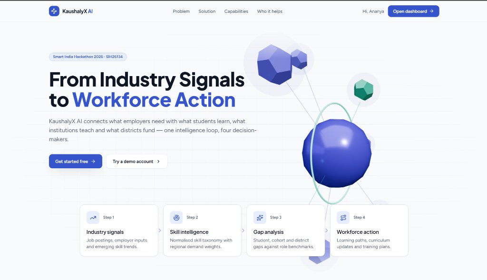
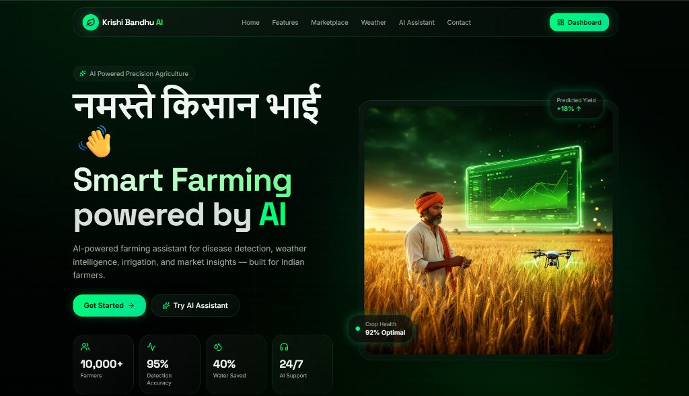
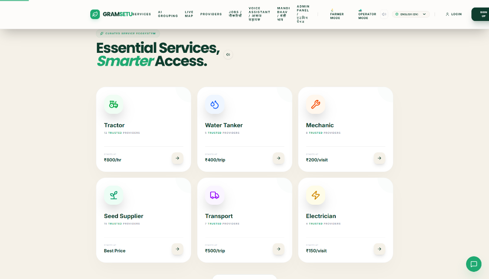
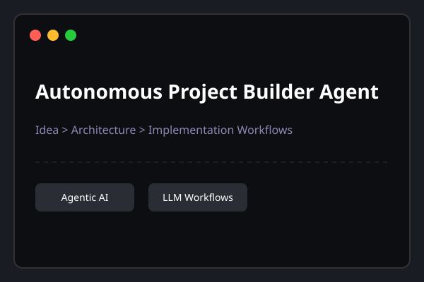
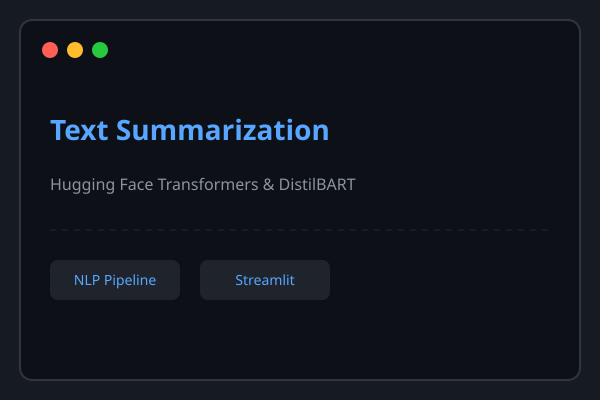

Turning Ideas Into Intelligent Solutions.
AI/ML Student | Aspiring AI Engineer | Developer
I build practical AI-powered applications and modern digital experiences, combining artificial intelligence with web development to solve real-world problems.
Scroll down
"Rimanshu Patidar is a B.Tech student in Artificial Intelligence and Machine Learning at Bansal Institute of Science & Technology, Bhopal. He is drawn to generative AI, agentic AI and natural language processing, and he builds web and AI projects to turn what he learns into working software. His goal is to become an AI Engineer."
Based in Bhopal, India
I build AI and web projects across agriculture, education and language, learning a little more with every one.
Get inSELECTED WORKS
Connects industry demand signals with student skills, institutional learning, and workforce development.

A smart farming assistant designed to help Indian farmers with crop intelligence, disease detection, weather information, irrigation, and market insights.

A platform designed to connect rural users with essential services and service providers, including tractors, water tankers, mechanics, seed suppliers, transport, and electricians.

Autonomous Project Builder Agent: an AI agent that transforms project ideas into structured development plans and actionable implementation workflows.

An NLP-based document summarization application using Python and transformer models to condense lengthy documents into concise and meaningful information.

I start by learning the concept, then build a project around it, then work toward putting it in front of real users. That loop is how I am growing into an AI Engineer.